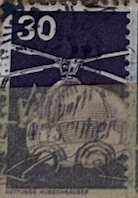
| SOURCE | TITLE| IMAGE MATCH | click to source page |
| eBay | French Polynesia Scott #C33 Mint Never Hinged | eBay | 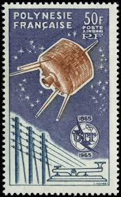 |
| Colorado State University | Syncom-series satellite Common Design Types | 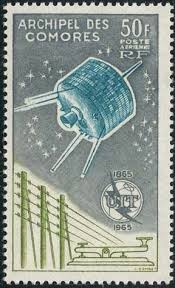 |
| MOLLY RAUSCH | MOLLY RAUSCH : Paintings & Drawings : Postage Stamp Book | 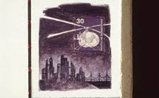 |
| eBay | New Hebrides Individual Topical Postal Stamps for sale | eBay | 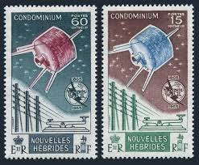 |
| Colorado State University | The Syncom Publicity Image and the Early Syncom Satellites | 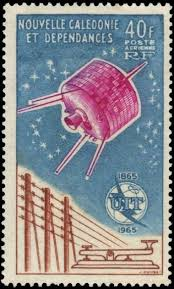 |
| eBay | France and Colonies Space Stamps for sale | eBay | 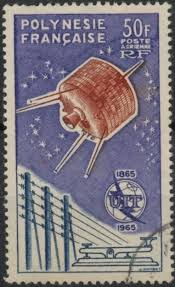 |
| eBay | New Hebrides Stamps # 125 MNH VF Scott Value $26.50 | eBay | 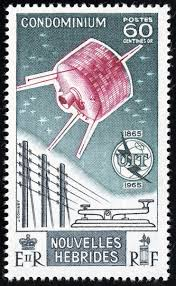 |
| eBay | Belarus Space Postal Stamps for sale | eBay | 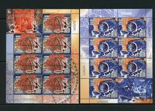 |
| buyhungarianstamps.com | #1874-1879 Czechoslovakia - In Memory of American and Russian Astronau – Eastern Europe Postage Stamps | Hungaria Stamp Exchange | 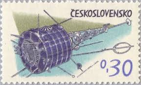 |
| stamps-plus.com | Stamps Plus | Comoro Islands | 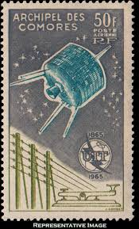 |
| eBay UK | Technology European Stamps for sale | eBay UK | 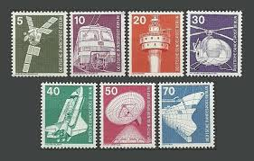 |
| Mystic Stamp | C33 - 1965 French Polynesia - Mystic Stamp Company | 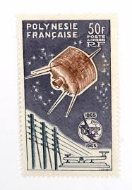 |
| eBay | Mint Never Hinged/MNH French Polynesia Topical Postal Stamps for sale | eBay | 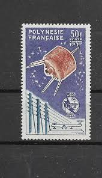 |
| eBay | Wallis & Futuna C20, MNH. Michel 207. ITU-100, 1965. Telegraph, Syncom satellite | eBay | 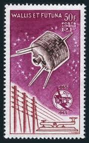 |
| Burda Auction | T.A.A.F. / Oceania, Antarctica / Australia and Oceania / Philately | Burda Auction | 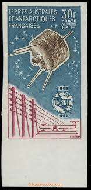 |
| eBay | Mint Never Hinged/MNH French Comoros Air Mail Stamps for sale | eBay | 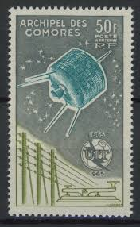 |
| Poppe Stamps | Poppe Stamps: Central African Republic, 1972, 291, Satellites, Rockets, Postal, Stamp Exhibitions - stamps for sale by theme and country | 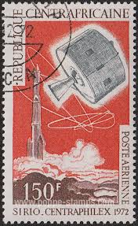 |
| eBay | TAAF/FSAT French & Colonies Proof, Essay Stamps for sale | eBay | 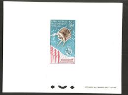 |
| eBay | French Polynesia UIT/ITU 1965 MNH-120 Euro | eBay | 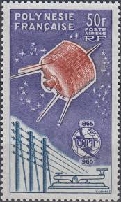 |
| risjb.com.br | UNMOUNTED MINT COMMONWEALTH BRITISH COLONIAL | 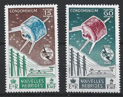 |
| eBay | Berlin 1975-76, Industry and technology I set VF MNH, Mi 494-507 cat 20€ | eBay | 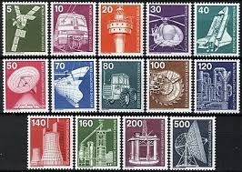 |
| prideradio.de | Prophila Collection Áreas Francesas Antártida 177-179 | 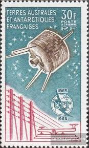 |
| eBay | FRENCH POLYNESIA 1965 50f AIR ITU,SPACE,SATELLITE,POLYNESIE FRANCAISE,NHM | eBay | 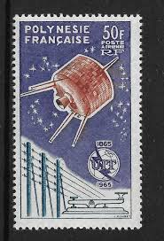 |
| eBay | ST PIERRE & MIQUELON #C29 Mint Never Hinged Scott $24.00 | eBay | 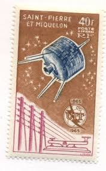 |
| Colnect | Stamp: Sputnik (Hungary(Space Research (1977)) Mi:HU 3214A,Sn:HU 2498,Yt:HU 2576,Sg:HU 3126,AFA:HU 3132,Phi:HU 3205 📮 | 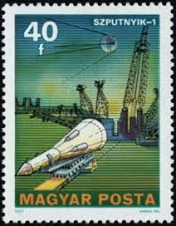 |
| eBay | Cancelled to Order/CTO Original Gum Space Postal Stamps for sale | eBay | 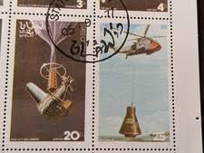 |
| Shutterstock | Ceskoslovensko Circa 1963 Stamp Printed Czech Stock Photo 158506766 | Shutterstock | 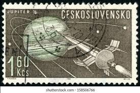 |
| Alamy | CZECHOSLOVAKIA - CIRCA 1973: a stamp printed in Czechoslovakia shows Evzen Rosicky and Mirko Nespor, and ivy leaves, Czechoslovak Martyrs during World Stock Photo - Alamy | 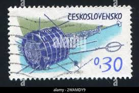 |
| eBay | Frankreich Kolonie Komoren Post Luft Pa Nr. 14 Telekommunikation neuer Stempel | eBay | 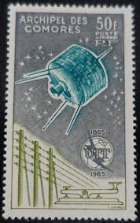 |
| eBay | CANADA - 1993 The 50th Anniversary of Second World War - M604 | eBay | 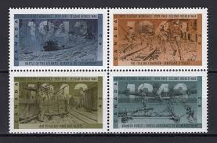 |
| eBay | FRENCH POLYNESIA Sc C33 NH ISSUE OF 1965 - ITU. Sc$80 | eBay | 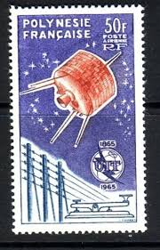 |
| eBay | Franz. Polynesien 1965 - Mi-Nr. 44 ** - MNH - Raumfahrt / Space (I) | eBay | 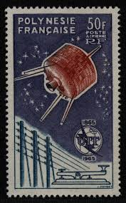 |
| Dreamstime.com | 921 Spaceship Message Stock Photos - Free & Royalty-Free Stock Photos from Dreamstime - Page 4 | 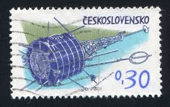 |
| NASASpaceFlight.com - | Space Stamps | 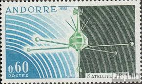 |
| eBay | Comoro Islands Stamp Scott# C14 ITU Issue 1965 MNH little gum disturbed L727 | eBay | 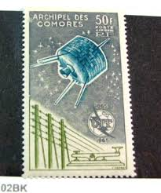 |
| GetArchive | Stamp Soviet Union 1988 CPA5905, Soviet Union - PICRYL - Public Domain Media Search Engine Public Domain Image | 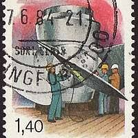 |
| eBay | Czechoslovakia 1970 &73 Satellites Sc-1716-18 & 1875 Used Br#8 - US Seller | eBay | 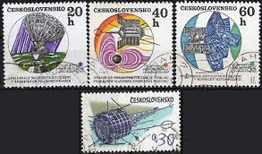 |
| eBay | St. Pierre & Miquelon 1965 - Mi-Nr. 412 ** - MNH - Raumfahrt / Space | eBay | 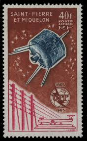 |
| eBay | Germany B 1975 Industry Radio Camera Mining Oil Medical Tractor Helicopter Train | eBay | 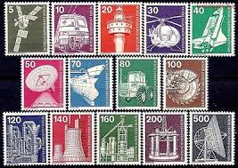 |
| eBay | NEW HEBRIDES FRENCH #124-5, Mint Hinged, Scott $26.00 | eBay | 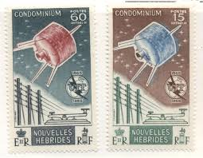 |
| vividagallery.com | Sputnik Space Satellite Romania Blue Orange Cosmic Explorer Vintage Tote Bag by Vivida Gallery - Vivida Gallery | 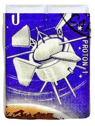 |
| eBay | Dahomey Space Stamps for sale | eBay | 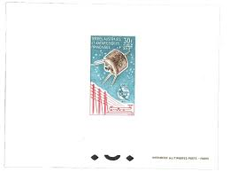 |
| eBay | KOMOREN, 1965 Fernmeldeunion UIT 67 **, (24425) | eBay | 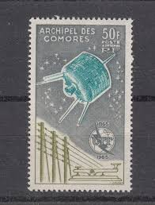 |
| absentofi.org | Childhood fasciations reflected in my fascinations now: space and nature – Mystery of Existence | 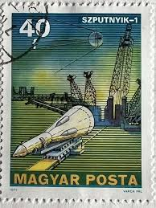 |
| eBay | DP Stamps, French Southern & Antarctic Territory, 1965, SC C8, MNH, Air Mail | eBay | 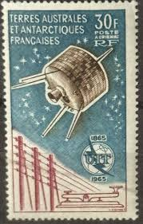 |
| Colorado State University | Satellite Italiano Ricerca Industriale Orientata (SIRIO) series | 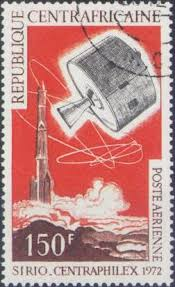 |
| eBay | 1965 TAAF - FRENCH ANTARCTIC - Airmail Yvert Catalog No. 9 - MNH** | eBay | 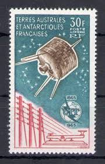 |
| Etsy | Hungary Sputnik Stamp Print - Etsy | 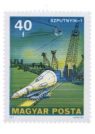 |
| UNC.UA | Филателия — купить марки и конверты Буркина-Фасо на аукционе для коллекционеров UNC.UA | 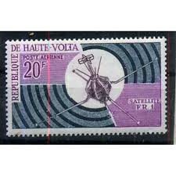 |
| postbeeld.com | Stamp 1963, Mauritania Weather satellite 1v, 1963 - Collecting Stamps - PostBeeld - Online Stamp Shop - Collecting | |
| eBay | New Caledonia 1965, International Telecommunications Union (ITU) MNH, Mi 412 €9 | eBay | |
| eBay | ICOLLECTZONE New Caledonia C40 VF NH | eBay | |
| eBay | Stamp Of French Polynesia Aerial Post No. 10 Mint ** Luxury MNH | eBay | |
| Cherrystone Auctions | U.S. and Worldwide Stamps & Postal History - August 9-10, 2016 - CZECHOSLOVAKIA | |
| Shutterstock | 3+ Thousand First Space Stamp Royalty-Free Images, Stock Photos & Pictures | Shutterstock | |
| bwdavis.us | WW Czechoslovakia after 1955 - Collectibles of Bwdavis | |
| Dreamstime.com | Vertel Stock Photos - Free & Royalty-Free Stock Photos from Dreamstime | |
| eBay | New Caledonia stamp C40 MH | eBay | |
| eBay | Mauritania ScC25 WMO, Space, Satellite, Meteorology & Navigation, Deluxe Proof | eBay | |
| eBay | Space Used Czech & Czechoslovakian Stamps for sale | eBay |